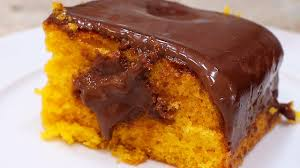

Bolo de Cenoura
Home
Bolo de Cenoura
Bolo de Chocolate
Strogonoff
Receita Bolo de Cenoura:
Uma receita
deliciosa
e
fácil
de fazer, veja os ingredientes e o
passo a passo abaixo:
Ingredientes:
4 cenouras médias
2 xícaras de açúcar
2 xícaras de farinha de trigo
4 ovos
1/2 xícara de óleo
1 colher de sopa de fermento em pó
Modo de Preparo:
Preaqueça o forno a 80°C.
Bata no liquidificador a cenoura, os ovos, o oléo e o açúcar
Em uma tigela, mistura a farinha de trigo e o fermento.
Adicione a mistura líquida à mistura seca e mexa até formar uma massa homogênea
Coloque em uma forma untada e asse por 40 minutos.
